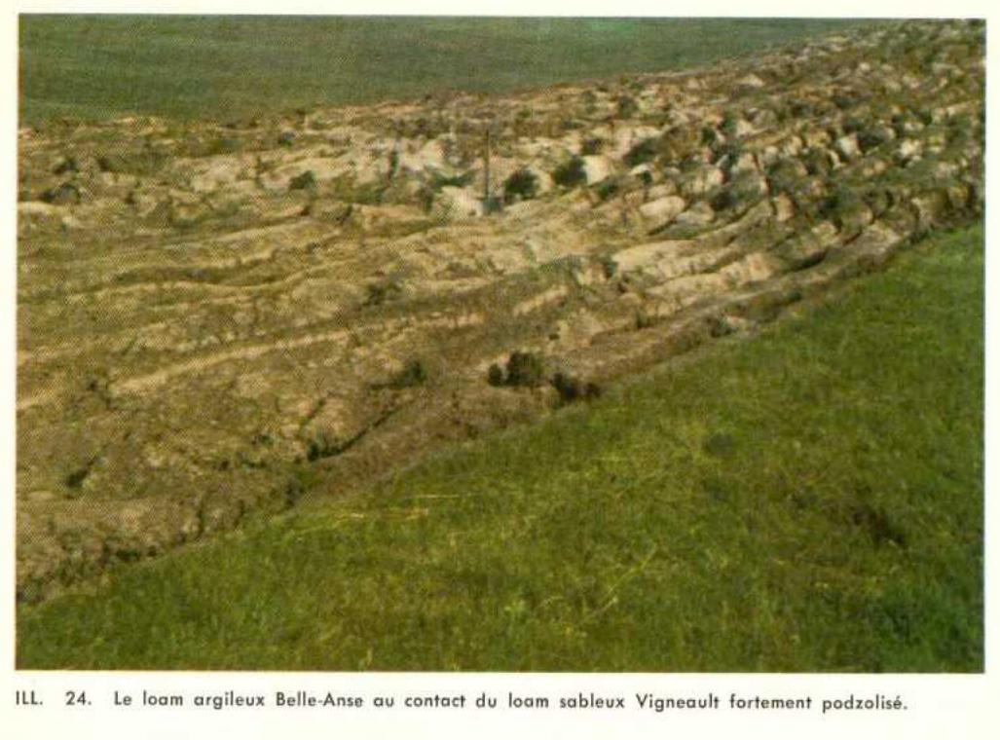

Identification & Caractéristiques Générales
La série Belle-Anse se développe sur des dépôts meubles alluviaux récents d'origine fluviatile ou fluviomarine, mis en place dans les contextes de plaines inondables, de terrasses basses ou de cônes de déjection associés aux dynamiques littorales et continentales, notamment documentés dans la région des Îles-de-la-Madeleine. Ces formations sédimentaires subactuelles se caractérisent par une topographie généralement plane à faiblement ondulée, avec des pentes variant de 0 à 2 %, ce qui favorise l'accumulation de matériaux minéraux stratifiés dont la texture globale tend vers le sable fin ou le loam sableux, selon l'énergie des courants de dépôt au moment de la sédimentation.
Sur le plan morphologique, le profil de sol de la série Belle-Anse montre un développement minimal, typique des Régosols orthiques, caractérisé par l'absence d'horizon B génétique distinct sous l'horizon de surface cultivé ou organique (Ap). Le profil présente une structure meuble, non cimentée, et une pierrosité nulle à faible. Le drainage naturel est jugé modérément bon, assuré par une perméabilité modérément rapide à rapide inhérente à la nature sableuse et meuble du substrat. La nappe phréatique est généralement peu profonde en période de fonte nivale ou de fortes précipitations, mais elle s'abaisse suffisamment en saison végétative pour éviter les conditions d'hydromorphie prolongée. La réaction du sol (pH) est légèrement acide à neutre, reflétant la minéralogie des apports sédimentaires locaux.
Sur le plan agronomique, les sols de la série Belle-Anse offrent des aptitudes modérées pour la production agricole, principalement limitées par leur texture grossière induisant une faible capacité de rétention en eau et en éléments nutritifs ainsi qu'une sensibilité inhérente à l'érosion éolienne et hydrique lors des périodes de mise à nu. La régie de ces sols requiert des apports réguliers en matière organique et une fertilisation fractionnée pour pallier le potentiel de lixiviation des éléments fertilisants solubles. Bien qu'ils conviennent bien aux cultures fourragères et à certaines productions horticoles adaptées aux sols légers, leur mise en valeur optimale peut nécessiter l'installation de brise-vent pour contrôler l'érosion éolienne et, localement, la mise en place d'un réseau de drainage souterrain d'appoint pour stabiliser la portance en début de saison.
Classification Taxonomique & Environnement Pédologique
| Ordre Pédologique | Régosolique |
|---|---|
| Grand Groupe (SCSS) | Régosol humique |
| Sous-Groupe Taxonomique | Régosol humique orthique |
| Famille Pédologique | Limoneuse-fine, mixte sableux, acide |
| Mode de Dépôt Parental | Fluviatile |
| Classe de Drainage Naturel | Modérément bien drainé |
| Régime Thermique & Humidité | Frais / Humide |
Description Morphologique du Profil Type
Séquence génétique des horizons pédologiques caractérisant le profil type représentatif de la série Belle-Anse :
Profil représentatif — Pédologie des Îles-de-la-Madelei
✓ Source : Pédologie des Îles-de-la-Madelei — Page 41Couleur Munsell : 5YR 3/2, 7.5YR 5/2
Structure & Consistance : Grumeleuse très bien développée
Description morphologique : Loam argileux rouge foncé (5YR 3/2) brun à sec (7.5YR 5/2); structure grumeleuse très bien développée; moyennement à faiblement acide.
Couleur Munsell : 5YR 2/2, 5YR 5/2
Structure & Consistance : Grumeleuse
Description morphologique : Loam argileux brun rouge foncé (5YR 2/2), gris brun à sec (5YR 5/2); structure grumeleuse; plus friable qu'en Aa; moyennement à faiblement acide.
Profils Photographiques & Planches de Terrain
Documents iconographiques, figures pédologiques et coupes de terrain documentées dans les mémoires d'inventaire pour de la série Belle-Anse :

Propriétés Physico-Chimiques & Analyses de Laboratoire
| Horizon | Prof. (pces/cm) | Sable % | Limon % | Argile % | pH | C % | N % | Ca éch. | Mg éch. | K éch. | H+ éch. | Bases tot. | C.E.C. (meq/100g) | Saturation % |
|---|---|---|---|---|---|---|---|---|---|---|---|---|---|---|
| Aa | 0 - 12 | 31.2 | 40.0 | 28.8 | 5.6 | 6.90 | 0.44 | 20.8 | 4.4 | 0.2 | 12.0 | 25.4 | 37.4 | 67.9 |
| C | 12+ | 31.2 | 36.0 | 32.8 | 5.7 | 7.40 | 0.44 | 20.5 | 4.2 | 0.1 | 10.0 | 24.8 | 34.8 | 71.2 |
Particularités Régionales, Phases & Variantes Pédologiques
Déclinaisons régionales, faciès texturaux, phases d'érosion ou de pierrosité et variantes cartographiées par étude pour de la série Belle-Anse :
| Étude Régionale | Symbole | Appellation / Phase / Variante | Différenciation avec la série type (Analyse pédologique) |
|---|---|---|---|
| Pédologie des Ïles-de-la-Madeleine | Ba |
Belle-Anse loam argileux | Modalité modale de référence (type de base de la série). |
| Pédologie des Îles-de-la-Madelei | BLN |
Série Belle-Anse (Ba) | Conforme à la série type de référence (caractéristiques texturales et drainage identiques). |
Distribution Pédo-Paysagère & Représentativité Cartographique (Couverture PPS 2026)
- Accumulations organiques (TNH) — co-occurrente dans 2 polygone(s)
- Grand-Ruisseau loam argileux (GIS) — co-occurrente dans 1 polygone(s)
Aptitudes Agronomiques, Hydropédologie & Conservation des Sols
Indicateurs Hydropédologiques & Vulnérabilité à l'Érosion (BDHP 2026)
Interprétation BDHP : Potentiel de ruissellement modérément élevé. Faible taux d'infiltration, présence d'horizons ralentissant le drainage descendant.
Classement selon l'Inventaire des Terres du Canada (ITC / CLI) : Classe 1.
- Potentiel agricole : Terroir adapté aux cultures régionales selon la texture dominante et la régie de drainage.
- Contraintes majeures : Modérément bien drainé. Risque d'engorgement temporaire ou d'excès d'eau printanier.
- Gestion & Aménagement : Drainage souterrain ou superficiel préconisé sur les terres planes. Chaulage et apport organique régulier selon les bilans agronomiques.
- Cultures adaptées : Grandes cultures (maïs, soya, céréales), prairies fourragères et cultures maraîchères selon le contexte géomorphologique.